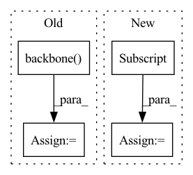

Pattern ID :41024

Before Change
images_by_frame_group = torch.permute(images, (1, 0, 2, 3, 4))
outputs = []
for image_batch in images_by_frame_group:
output = self.backbone(image_batch)
outputs.append(output.reshape(output.shape[0], output.shape[1], -1))
outputs = torch.cat(outputs, dim=2)
representations_concat = self.representation_fc(outputs)
representations = output.reshape(representations_concat.shape[0], representations_concat.shape[1], representations_concat.shape[2]//8,
After Change
frames_batch_shape = images.shape[0] * images.shape[1]
channels = images.shape[2]
image_height = images.shape[3]
image_width = images.shape[4]
images_batch_frames: TensorType["batch*frames", "channels":3, "image_height", "image_width"] = images.reshape(frames_batch_shape, channels,
image_height, image_width)
outputs: TensorType["batch*frames", "features", "rep_height", "rep_width"] = self.backbone(images_batch_frames)
outputs: TensorType["batch", "frames", "features", "rep_height", "rep_width"] = outputs.reshape(images.shape[0], images.shape[1], outputs.shape[1],
In pattern: SUPERPATTERN
Frequency: 4
Non-data size: 4
Instances
Fragment ID: 115693751
Project Name: danbider/lightning-pose
Commit Name: e44a3ec9d6ba5f388281230fca8bcbc060ed9548
Time: 2022-05-16
Author: colehurwitz@gmail.com
File Name: lightning_pose/models/base.py
M Class Name: BaseFeatureExtractor
N Class Name: BaseFeatureExtractor
M Method Name: get_representations(3)
N Method Name: get_representations(3)
M Parent Class: LightningModule
N Parent Class: LightningModule
M File Name: lightning_pose/models/base.py
N File Name: lightning_pose/models/base.py
M Start Line: 158
M End Line: 170
N Start Line: 161
N End Line: 181
'>
Before Change
batch_size = X.size(0)
with torch.no_grad():
feat = self.backbone(X)
out = self.classifier(feat)
loss = F.cross_entropy(out, target)
After Change
X, target = batch
batch_size = X.size(0)
out = self(X)["logits"]
loss = F.cross_entropy(out, target)
acc1, acc5 = accuracy_at_k(out, target, top_k=(1, 5))
'>
Fragment ID: 115693758
Project Name: vturrisi/solo-learn
Commit Name: 0aba1bed118e6a583941828d88374363e885bfd5
Time: 2021-06-18
Author: vt.turrisi@gmail.com
File Name: solo/methods/linear.py
M Class Name: LinearModel
N Class Name: LinearModel
M Method Name: shared_step(3)
N Method Name: shared_step(3)
M Parent Class: pl.LightningModule
N Parent Class: pl.LightningModule
M File Name: solo/methods/linear.py
N File Name: solo/methods/linear.py
M Start Line: 147
M End Line: 149
N Start Line: 149
N End Line: 149
'>
Before Change
images_by_frame_group = torch.permute(images, (1, 0, 2, 3, 4))
outputs = []
for image_batch in images_by_frame_group:
output = self.backbone(image_batch)
outputs.append(output.reshape(output.shape[0], output.shape[1], -1))
outputs = torch.cat(outputs, dim=2)
representations_concat = self.representation_fc(outputs)
representations = output.reshape(representations_concat.shape[0], representations_concat.shape[1], representations_concat.shape[2]//8,
After Change
frames_batch_shape = images.shape[0] * images.shape[1]
channels = images.shape[2]
image_height = images.shape[3]
image_width = images.shape[4]
images_batch_frames: TensorType["batch*frames", "channels":3, "image_height", "image_width"] = images.reshape(frames_batch_shape, channels,
image_height, image_width)
outputs: TensorType["batch*frames", "features", "rep_height", "rep_width"] = self.backbone(images_batch_frames)
outputs: TensorType["batch", "frames", "features", "rep_height", "rep_width"] = outputs.reshape(images.shape[0], images.shape[1], outputs.shape[1],
'>
Fragment ID: 115693755
Project Name: danbider/lightning-pose
Commit Name: 34b671290dd7e4b9a2cd4d3c9c8450c46ef7b274
Time: 2022-05-16
Author: colehurwitz@gmail.com
File Name: lightning_pose/models/base.py
M Class Name: BaseFeatureExtractor
N Class Name: BaseFeatureExtractor
M Method Name: get_representations(3)
N Method Name: get_representations(3)
M Parent Class: LightningModule
N Parent Class: LightningModule
M File Name: lightning_pose/models/base.py
N File Name: lightning_pose/models/base.py
M Start Line: 158
M End Line: 170
N Start Line: 161
N End Line: 181